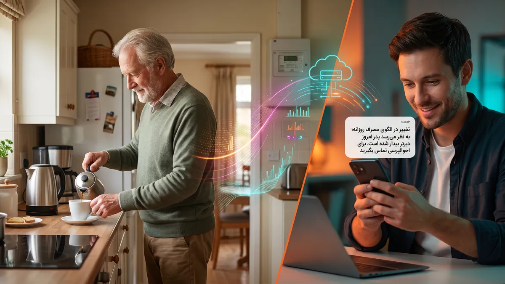

بسیاری از سالمندان ترجیح میدهند به صورت مستقل در خانه خود زندگی کنند، اما فرزندان و نزدیکان همواره نگران وقوع حوادث غیرمترقبه مانند زمین خوردن، بیماری ناگهانی یا فراموشی مصرف دارو هستند. روشهای متداول مانند نصب دوربینهای مداربسته احساس ناخوشایند نقض حریم خصوصی و زیر نظر بودن دائمی را به همراه دارد، و ابزارهای پوشیدنی (مانند دستبندهای هشدار) معمولاً فراموش شده یا با مقاومت در استفاده مواجه میشوند.
راهکار کاپ از هیچ دوربینی استفاده نمیکند؛ وضعیت سالمند فقط از روی پایش و تحلیل دادههای مصرف برق خانه تشخیص داده میشود.
چگونه جریان برق میتواند زبان سلامت سالمند باشد؟
رفتار روزمره هر انسانی بازتابی دقیق در جریان مصرف الکتریکی خانه به جای میگذارد. سالمندی که صبح بیدار میشود معمولاً:
- کتری برقی یا چایساز را روشن میکند (یک پیک مصرف مشخص چند دقیقهای).
- درب یخچال را باز میکند یا مایکروویو را روشن مینماید.
- تلویزیون یا رادیو را روشن میکند.
- روشنایی اتاق یا سرویس بهداشتی را فعال میکند.
این زنجیره فعالیتها یک «امضای رفتاری» منظم و روزانه تشکیل میدهد. اگر هوش مصنوعی این امضا را یاد بگیرد، در صورت هرگونه انحراف مشکوک متوجه شرایط غیرعادی خواهد شد.
«وقتی کتری برقی که هر روز رأس ساعت ۷:۳۰ روشن میشد تا ساعت ۱۰ صبح بیصدا مانده است، نیازی به دوربین نیست؛ جریان الکتریسیته خود هشداری نامحسوس از بروز حادثه میدهد.»
فناوری تفکیک بار (NILM) در پلتفرم KAP
پلتفرم KAP با بهرهگیری از فناوری NILM (Non-Intrusive Load Monitoring) بدون نیاز به اضافه کردن دهها سنسور در گوشه و کنار خانه، تنها با پایش تابلوی اصلی با دستگاه ESA، جریان وسایل مختلف را تفکیک میکند. سیستم یادگیری تقویتی کاپ طی ۷ الی ۱۴ روز الگوی خواب و بیداری، ساعات صرف غذا و زمان استراحت سالمند را یاد میگیرد.
سناریوهای هشدار هوشمند
- انحراف از روتین صبحگاهی: عدم ثبت هیچگونه فعالیت الکتریکی تا ۱.۵ ساعت پس از زمان معمول بیداری.
- روشنایی ممتد در سرویس بهداشتی: روشن ماندن مداوم چراغ یا فن سرویس بهداشتی بیش از ۴۵ دقیقه در نیمهشب که میتواند نشانه افتادن یا گیر افتادن سالمند باشد.
- فراموشی خاموش کردن وسایل حرارتی: روشن ماندن غیرعادی هیتر یا اتو که خطر حریق ایجاد میکند.
- تغییر تدریجی در الگوهای غذایی: کاهش تدریجی دفعات استفاده از اجاق برقی و یخچال در طول ماه که نشانهای از افت اشتها یا شروع افسردگی سالمند است.
کرامت انسانی و احترام به استقلال سالمند
بزرگترین دستاورد این فناوری، دادن استقلال کامل به والدین عزیز بدون ایجاد حس معلولیت یا کنترلشدگی است. هیچ تصویری ضبط نمیشود، هیچ صدایی شنود نمیشود و تنها سلامت روال روزمره از روی دیتای ایمن و رمزگذاریشده انرژی سنجیده میشود.